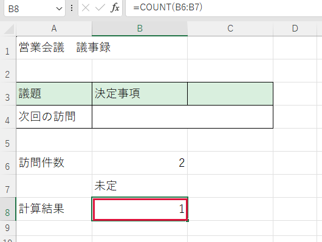
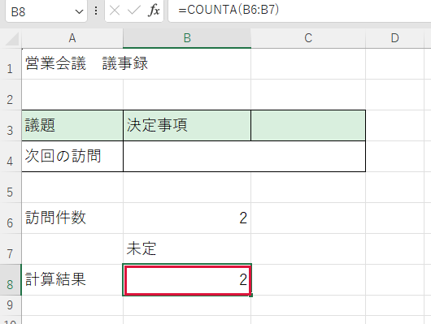

データの個数を数えたい


件数を調べるときは、数字だけか、文字も含むかで式を選びます。
操作手順
- 空のブックを開きます。B6（B列の6行目）に「2」を入力して Enter、すぐ下のB7に「未定」を入力して Enter を押します。
- 答えを出す空欄をクリックします。例ではB8（B列の8行目）です。
- 数字の欄だけ数えるときは半角で =COUNT(B6:B7) と入力します。B6からB7までが対象です。
- Enter を押します。「2」と「未定」のうち数字は一つなので、答えは1です。
- 文字も含む記入済みの欄を数える場合は、空欄に =COUNTA(B6:B7) と入力して Enter を押します。
できたか確認
数字を数えた答えは1、文字も含む記入済みの欄を数えた答えは2です。
注意点
COUNTAは空白文字や、何も表示しない式を含む欄も数えます。